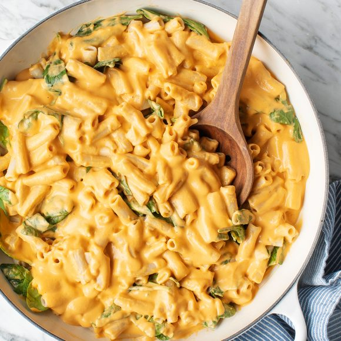
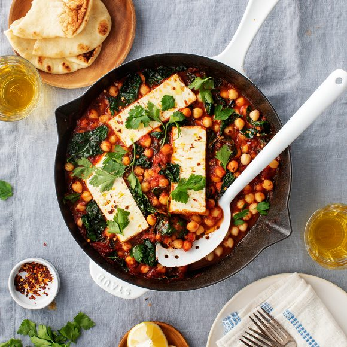
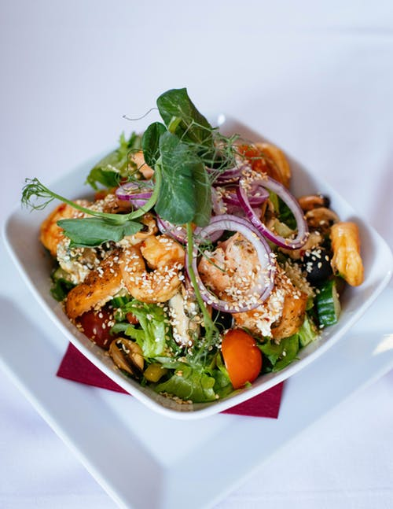
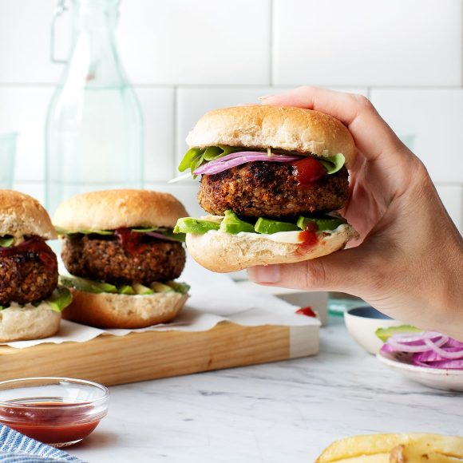
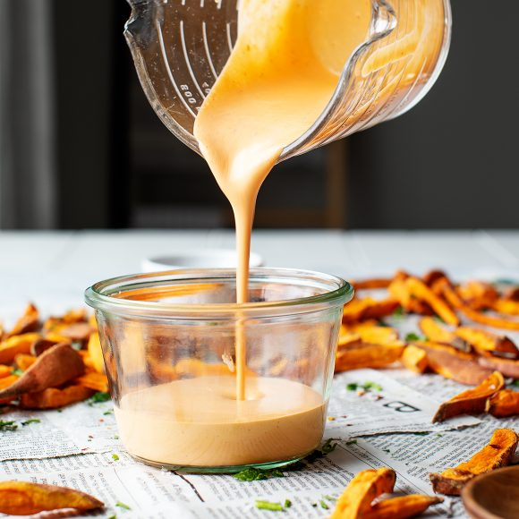

This hot and spicy chola paneer recipe is best for people looking for spicy-hot food.

This healthy baked oatmeal recipe makes for a delicious brunch! I love this blueberry version, but for a twist, swap in whatever seasonal fruit you like.

If you make one veggie burger recipe, it has to be this one. These burgers have a wonderful savory flavor and hearty texture. They're grillable, too!

This healthy and tasty at the same time ,sauce is the proper side to be chosen with our fries or burger to add a little mood.

This banana bread light and tasty recipe is good for people who are looking for this.

Our french fries are the best in the market ,crispy on the outside but soft on the inside with a little salt and a little mix of seasoning.

Mouthwatering perfection starts with two 100% pure beef patties and Big Mac sauce sandwiched between a sesame seed bun. It’s topped off with pickles, crisp shredded lettuce, finely chopped onion and American cheese.

This recipe is called Masala Fried Pomfret for a reason ,its so tender yet crisp at the same time and also is good for your heart.
| Food | Tasty | Healthy though |
|---|---|---|
| Chole bhature | ||
| Broccoli | ||
| Dosa | ||
| French Fries |